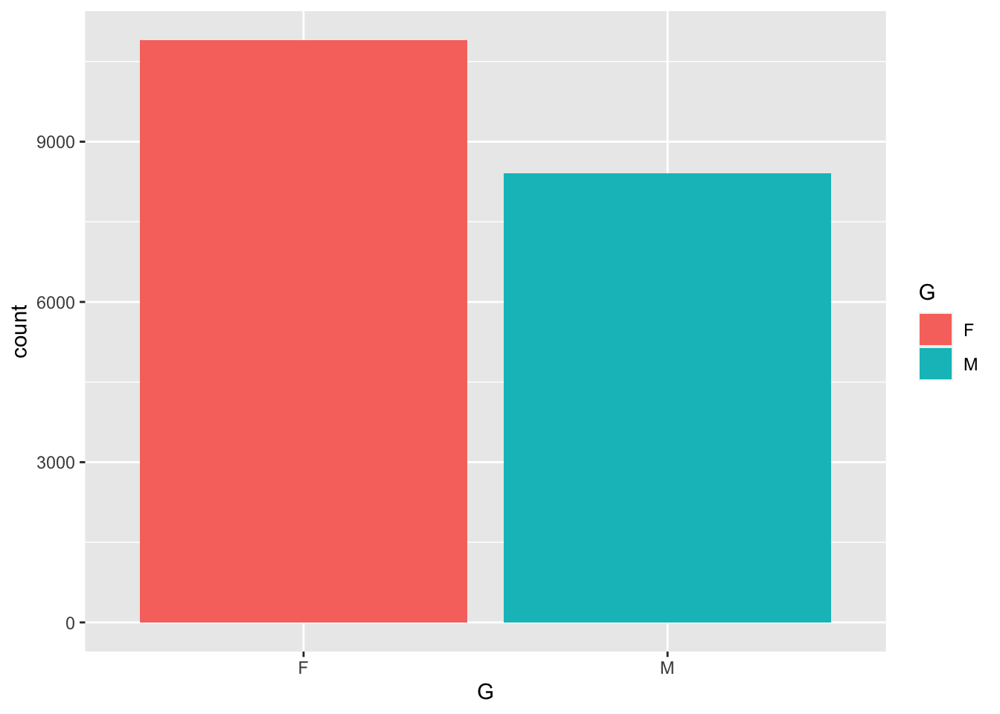
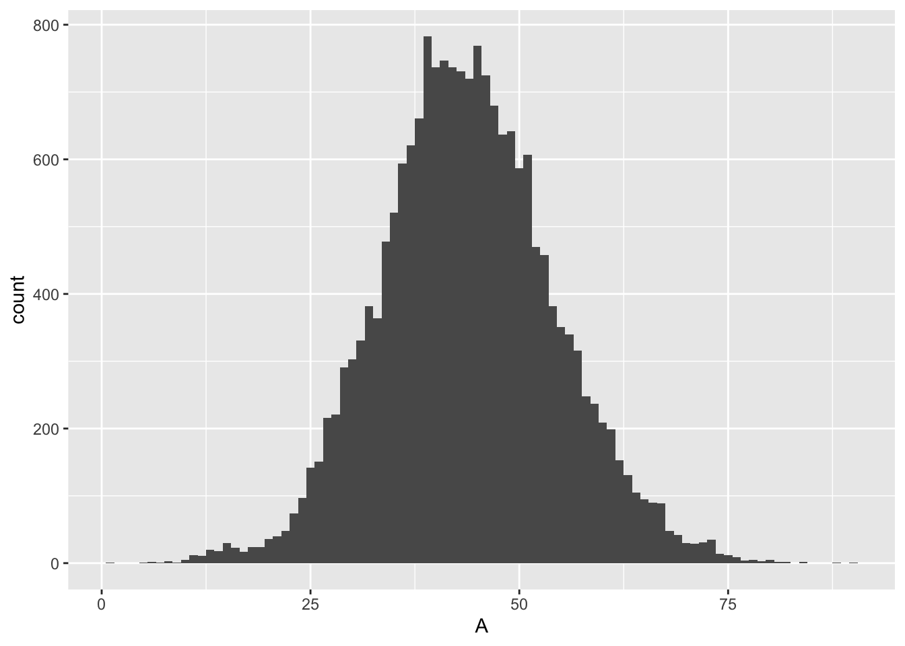
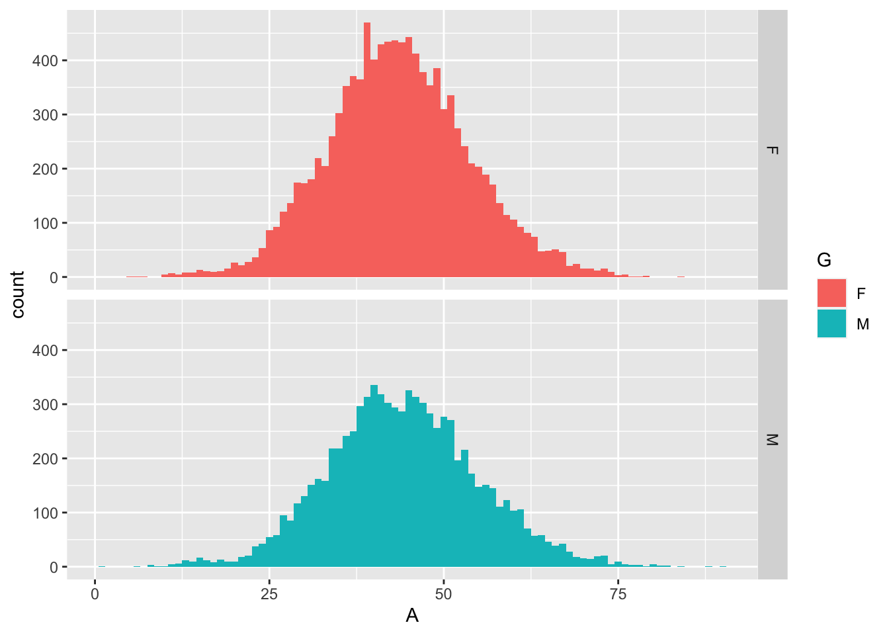
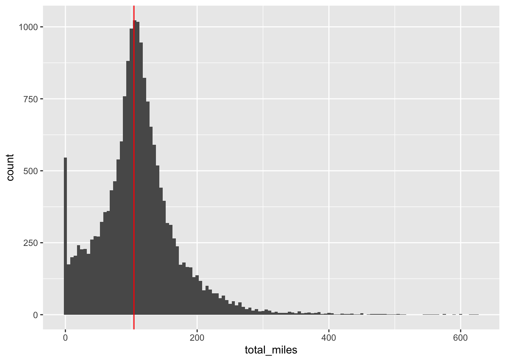
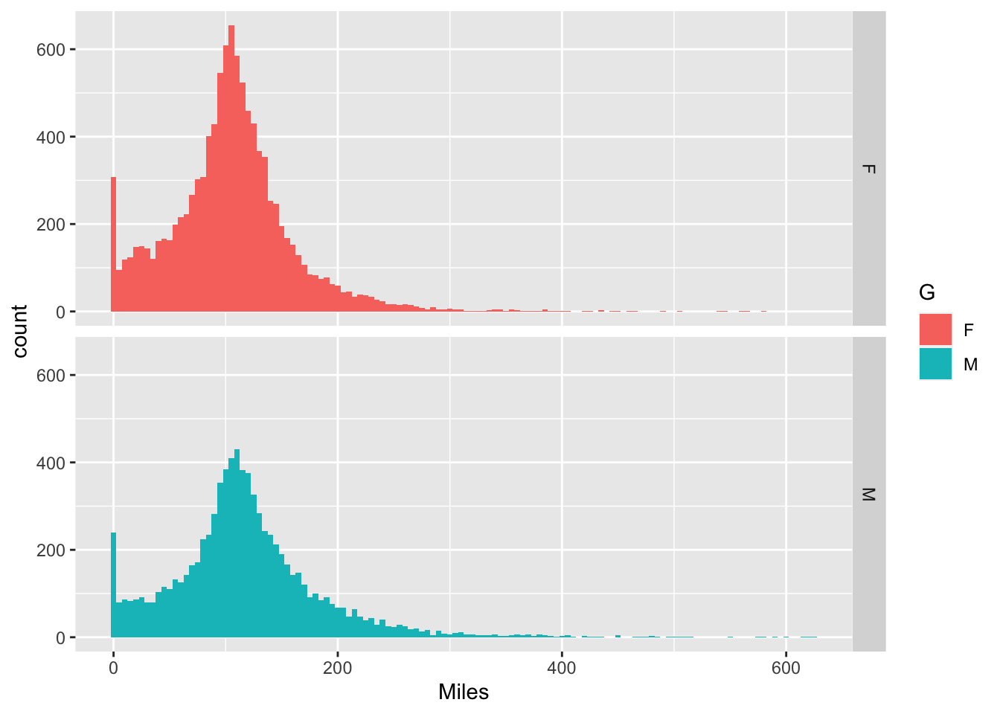
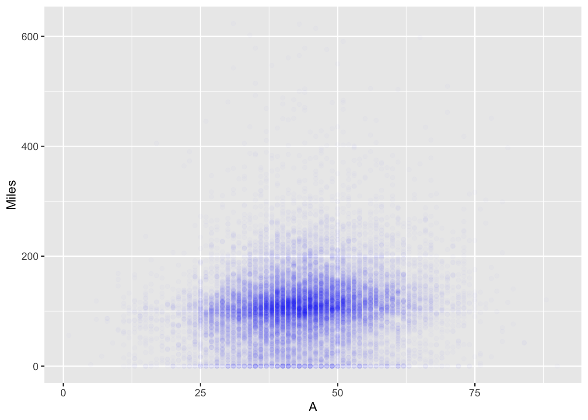
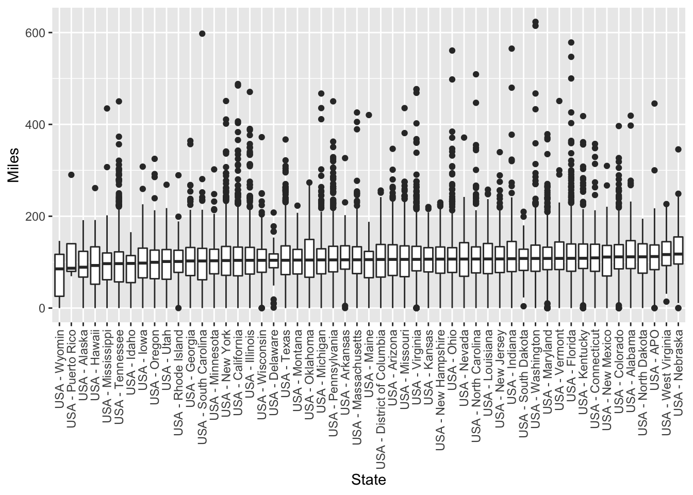

I joined the Great Virtual Race across Tennessee this summer. It’s by the guys who produce the Barkley Marathons, the crazy nearly impossible ultramarathon series. The goal for this event is to run across Tennessee virtually, a little more than 1000 km. Each day the data table is published as a csv and so I thought I would take a look at what I could do with it.
Some basics:
- The run goes from May 1 to August 31, which is 122 days.
- The distance is 634.84 miles / 1021.68 km
- Daily distance needed to complete the race then is 634.84/122 or 5.204 miles.
- Because I started a little late (5/13), I actually have only 110 days to complete the race or just over 5.77 miles per day.
Data Loading
suppressPackageStartupMessages(library(tidyverse))
suppressPackageStartupMessages(library(lubridate))gv <- read_csv("../datasets/gvrat_20200520.csv")## Parsed with column specification:
## cols(
## .default = col_double(),
## Position = col_character(),
## `Participant's Name` = col_character(),
## Event = col_character(),
## Home = col_character(),
## G = col_character(),
## KM = col_number(),
## `Your Approximate Location` = col_character(),
## `Comp%` = col_character(),
## `Proj Fin` = col_character()
## )## See spec(...) for full column specifications.Exploration
I decided I would try to separate out the tables as name, gender, age, etc. and a separate one for the daily miles since this will quickly get huge.
gv_roster <- gv %>%
select(Bib, name = `Participant's Name`, Event, G, A, Home, Miles) %>%
mutate(Event = as.factor(Event)) %>%
mutate(Home = as.factor(Home)) %>%
mutate(G = as.factor(G))
gv_miles <- gv %>%
select(-c(Position, `Participant's Name`, `Your Approximate Location`,
`Comp%`, `Proj Fin`, KM, Home, G, A, Miles)) %>%
pivot_longer(contains("/"), names_to = "run_date", values_to = "miles_d") %>%
mutate(run_date = mdy(paste0(run_date, "/2020"))) %>%
mutate(Event = as.factor(Event))Event
There are two events within this race, the dog version and the human version.
DRAT4AS = “Doggie Run Across Tennessee For Animal Shelters” and GVRAT = human version.
table(gv_roster$Event)##
## DRAT4AS GVRAT
## 295 19016Gender
In lots of races there are more women than men, and this one is no different.
table(gv_roster$G, gv_roster$Event)##
## DRAT4AS GVRAT
## F 165 10738
## M 130 8278prop.table(table(gv_roster$G, gv_roster$Event), 2)##
## DRAT4AS GVRAT
## F 0.5593220 0.5646824
## M 0.4406780 0.4353176ggplot(gv_roster, aes(x=G, fill = G)) + geom_bar() Definitely more ladies than men, even doggy ladies, but interestingly enough the same percentage of doggy ladies as human ladies.
chisq.test(table(gv_roster$G, gv_roster$Event))##
## Pearson's Chi-squared test with Yates' continuity correction
##
## data: table(gv_roster$G, gv_roster$Event)
## X-squared = 0.01565, df = 1, p-value = 0.9004Age
Taking out the doggies, we can look at the age distribution.
gv_roster %>% filter(Event == "GVRAT") %>%
ggplot(aes(x=A)) +
geom_histogram(binwidth = 1)## Warning: Removed 2 rows containing non-finite values (stat_bin).
The mean participant age is 43.3639942. The median age of human participants is 43.
I am exactly the median age for this race.
Age vs. Gender
The distributions of ages by gender look remarkably similar.
gv_roster %>% filter(Event == "GVRAT") %>%
ggplot(aes(x=A, fill = G)) + geom_histogram(binwidth = 1) +
facet_grid(G ~ .)## Warning: Removed 2 rows containing non-finite values (stat_bin).
Looks normally distributed enough to just use normal distribution tests but I went with a t-test anyway. Men were about 7 months older than women in this race.
t.test(gv_roster$A ~ gv_roster$G) # includes doggos##
## Welch Two Sample t-test
##
## data: gv_roster$A by gv_roster$G
## t = -3.6332, df = 17470, p-value = 0.0002808
## alternative hypothesis: true difference in means is not equal to 0
## 95 percent confidence interval:
## -0.9128226 -0.2730463
## sample estimates:
## mean in group F mean in group M
## 43.10585 43.69879I guess this shows that with a large enough sample, even small differences in age become significant.
Mileage
Here’s the total miles distribution. There are lots of 0 mile runners. The “Buzzard” is a pretend character that is flying along at the goal pace of 5.204 miles per day. Runners can use the Buzzard to gauge where they are relative to the goal. By 5/20, it was at 104.0721311 miles.
gv_miles %>% filter(Event == "GVRAT") %>%
group_by(Bib) %>%
summarize(total_miles = sum(miles_d, na.rm = T)) %>%
ggplot(aes(x = total_miles)) +
geom_histogram(binwidth = 5) +
geom_vline(xintercept = 634.84/122*20, color = "red")
Uh oh, looks like about just about half of the participants aren’t on track to make it.
gv_totals <- gv_miles %>% filter(Event == "GVRAT") %>%
group_by(Bib) %>%
summarize(total_miles = sum(miles_d, na.rm = T))
quantile(gv_totals$total_miles, seq(0, 1, 0.1))## 0% 10% 20% 30% 40% 50% 60% 70% 80% 90% 100%
## 0 34 66 86 98 107 117 129 146 180 624Total Miles vs. Gender
gv_roster %>% filter(Event == "GVRAT") %>%
ggplot(aes(x=Miles, fill = G)) +
geom_histogram(binwidth = 5) +
facet_grid(G~.)
t.test(Miles ~ G, dat = gv_roster)##
## Welch Two Sample t-test
##
## data: Miles by G
## t = -14.472, df = 16078, p-value < 2.2e-16
## alternative hypothesis: true difference in means is not equal to 0
## 95 percent confidence interval:
## -15.03826 -11.45047
## sample estimates:
## mean in group F mean in group M
## 104.0505 117.2949Interestingly men had run a little farther than women on average (including the 0 mile people).
Age vs. Mileage
gv_roster %>% filter(Event == "GVRAT") %>%
ggplot(aes(x = A, y = Miles)) +
geom_point(alpha = 0.01, color = "blue")## Warning: Removed 2 rows containing missing values (geom_point).
There didn’t seem to be a significant correlation between age and miles run, although on the regression, the older runners were running more in a statistically significant way. The regression parameter estimate is 0.84 total miles/year of age.
summary(lm(Miles ~ A, data = gv_roster))##
## Call:
## lm(formula = Miles ~ A, data = gv_roster)
##
## Residuals:
## Min 1Q Median 3Q Max
## -149.21 -33.07 -2.92 25.98 523.93
##
## Coefficients:
## Estimate Std. Error t value Pr(>|t|)
## (Intercept) 73.18551 1.76606 41.44 <2e-16 ***
## A 0.84467 0.03944 21.41 <2e-16 ***
## ---
## Signif. codes: 0 '***' 0.001 '**' 0.01 '*' 0.05 '.' 0.1 ' ' 1
##
## Residual standard error: 61.13 on 19306 degrees of freedom
## (4 observations deleted due to missingness)
## Multiple R-squared: 0.0232, Adjusted R-squared: 0.02315
## F-statistic: 458.6 on 1 and 19306 DF, p-value: < 2.2e-16Runners by State and Country
I decided to look at where runners come from. Here’s the list sorted by most runners.
gv_roster %>% filter(Event == "GVRAT") %>%
group_by(Home) %>%
summarize(nrunners = n()) %>%
arrange(-nrunners)## # A tibble: 142 x 2
## Home nrunners
## <fct> <int>
## 1 USA - Tennessee 1157
## 2 USA - California 995
## 3 Canada -Ontario 959
## 4 USA - Texas 869
## 5 England 847
## 6 USA - Virginia 792
## 7 USA - Ohio 685
## 8 USA - Illinois 682
## 9 USA - New York 652
## 10 USA - Pennsylvania 647
## # … with 132 more rowsInteresting but not surprising that the state of Tennessee had the most runners signed up. Certainly this is way higher per capita than California!
Runners from Hawaii
Here’s the runners from my home state of Hawaii:
gv_roster %>% filter(grepl("Hawaii", Home))## # A tibble: 42 x 7
## Bib name Event G A Home Miles
## <dbl> <chr> <fct> <fct> <dbl> <fct> <dbl>
## 1 9385 Duane Zitta GVRAT M 39 USA - Hawaii 261.
## 2 11868 Sally Cravens GVRAT F 61 USA - Hawaii 192.
## 3 17429 Aaron Reed GVRAT M 28 USA - Hawaii 182.
## 4 6786 April Shrum GVRAT F 42 USA - Hawaii 169.
## 5 16019 Kana Yamamoto GVRAT F 45 USA - Hawaii 158.
## 6 6906 Robert Davidson GVRAT M 37 USA - Hawaii 155.
## 7 16629 michael hee GVRAT M 60 USA - Hawaii 154.
## 8 11636 Sean Thompson GVRAT M 39 USA - Hawaii 150.
## 9 13815 Andrew Borrebach GVRAT M 29 USA - Hawaii 143.
## 10 7202 Chris Robinson GVRAT M 39 USA - Hawaii 134.
## # … with 32 more rowsMiles by State
gv_roster %>% filter(Event == "GVRAT") %>%
filter(grepl("USA", Home)) %>%
ggplot(aes(x = reorder(Home, Miles, FUN = median),y = Miles)) +
geom_boxplot() +
theme(axis.text.x = element_text(angle = 90, vjust = 0.5, hjust = 1)) +
xlab("State")
Hawaii is the 49th place USA location by median miles. It’s hard to tell from the boxplots but the difference in miles between Hawaii and Nebraska is over 20 miles, so it’s a pretty significant percent difference.
gv_roster %>% filter(Event == "GVRAT") %>%
filter(grepl("USA", Home)) %>%
group_by(Home) %>%
summarize(medianMiles = median(Miles)) %>%
arrange(-medianMiles)## # A tibble: 53 x 2
## Home medianMiles
## <fct> <dbl>
## 1 USA - Nebraska 118.
## 2 USA - West Virginia 117.
## 3 USA - APO 112.
## 4 USA - Alabama 112.
## 5 USA - North Dakota 112.
## 6 USA - Colorado 112.
## 7 USA - New Mexico 111.
## 8 USA - Connecticut 109.
## 9 USA - Kentucky 108.
## 10 USA - Florida 108.
## # … with 43 more rowsDiscussion
I didn’t include the finishers in the race who are now going back across Tennessee to Arkansas. There were 11 as of this data pull. Ideas for next time:
- looking closer at my progress towards the goal (how my distance run affects my daily mileage required etc.)
- how many people were cheating at logging early miles (not supposed to log miles made before you signed up)
- re-creating the tidal wave chart that shows the histogram of total miles by date